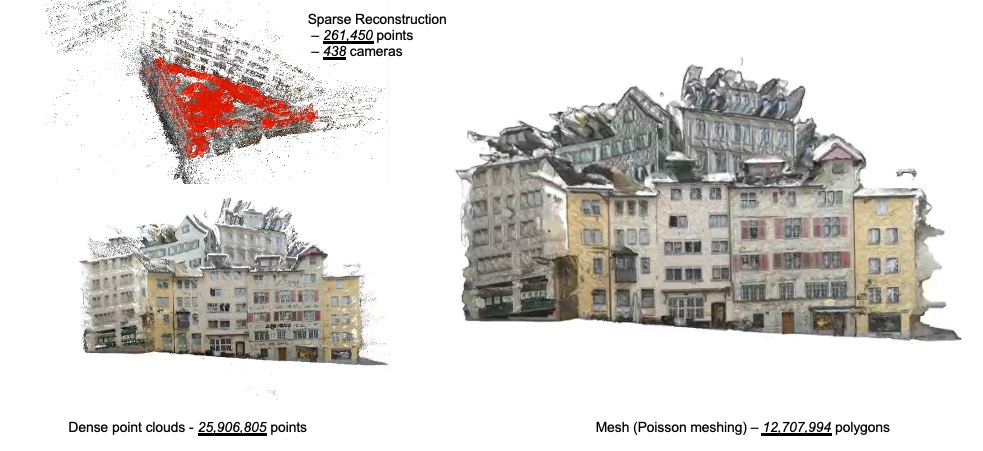
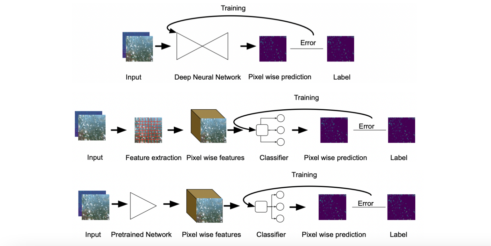
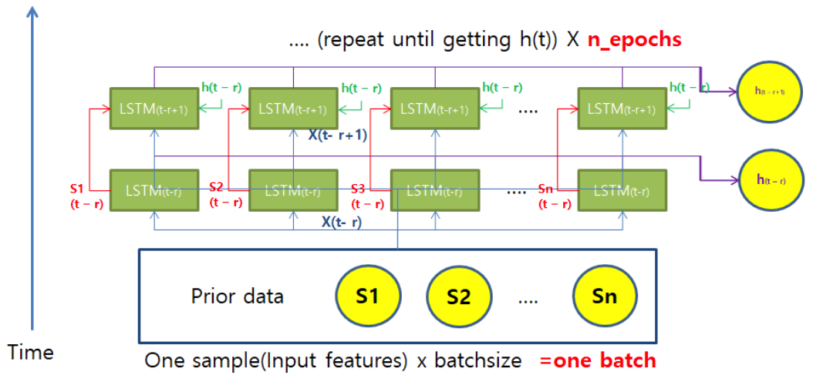
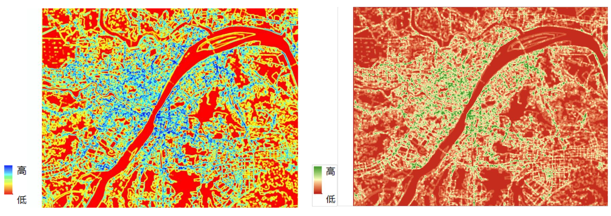
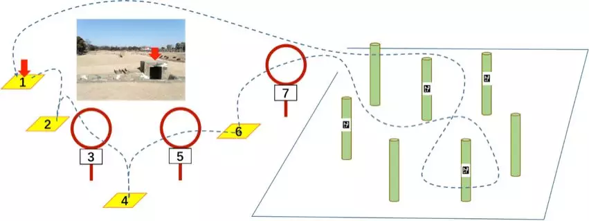

|
|
{kind=link}
|
M.Sc. (SEMP Program) in Geomatics, ETH Zurich, Sep. 2021 - Jun. 2022 (Expected) M.Sc. in Geoinformation, KTH Royal Institute of Technology, Sep. 2020 - Jun. 2022 (Expected) B.Eng. in Photogrammetry and Remote Sensing, Wuhan University, Sep. 2016 - Jun. 2020 |
|
I work in the intersection of Deep Learning, Remote Sensing and 3D vision. I deeply enjoy the process of exploring and discovering the unknown world and knowledge. |
|  |
report / slides / video / code
Advisor: Dr. Cenek Albl, ETH Zurich |
|  |
lab1 (classification) / lab2 (regression) / lab3 (Time series prediction)
Advisor: Prof. Dr. Konrad Schindler, ETH Zurich |
|  |
slides / code
Advisor: Dr. Xiaoliang Ma, KTH Royal Institute of Technology |

|
link / code
Advisor: Prof. Dr. Yifang Ban,
KTH Royal Institute of Technology |
|  |
slides / code
Advisor: Prof. Dr. Shugen Wang, Wuhan University |
|  |
paper / slides / video / code
Advisor: Dr. Zhifeng Xiao, Wuhan University |
|
|
|
Linjun Qian, Fanfan Xia, Zhifeng Xiao, Zhao Chen, Yang Mu China high resolution earth observation conference (CHREOC), 2018, (Outstanding Paper) website / paper / slides / code / bibtex |
|
|